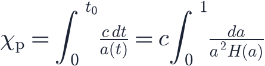
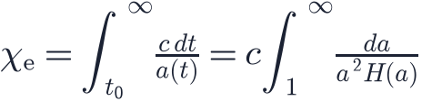
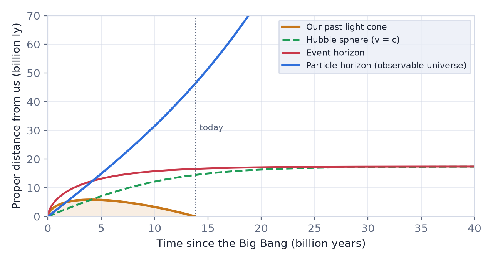

In this lesson you will learn
|
Limits of an expanding universe
In a static universe that has existed forever, we could eventually see every galaxy. Our universe is different: it has a finite age and it expands. Light needs time to travel, and space stretches while it does. This creates horizons: boundaries that limit which parts of the universe can influence us.
Three distances are often confused. Let us take them one at a time.
1. The Hubble sphere
From the Hubble–Lemaître law , galaxies at the Hubble distance
recede at exactly the speed of light. The sphere with this radius is the Hubble sphere. Today, with km/s/Mpc, its radius is about 14.4 billion light-years (4.4 Gpc).
The Hubble sphere is not a horizon It is tempting to think that light from galaxies receding faster than light can
never reach us. Yet we routinely observe such galaxies. A galaxy at redshift
|
How is that possible? Imagine an ant walking along a rubber band towards you while the band is being stretched. At first the stretching carries the ant away from you faster than it walks. But if the stretching rate decreases, or the ant reaches a part of the band that recedes more slowly, it eventually makes progress and arrives. In the same way, the Hubble sphere of our universe has grown over time, so light that was initially "losing ground" later found itself inside the sphere and reached us.
2. The particle horizon: the edge of what we can see
The particle horizon is the distance to the farthest objects from which light could have reached us since the Big Bang. During each short time interval light covers a comoving distance . Adding up all intervals from the Big Bang until now:

For the Planck 2018 universe this gives
This is the radius of the observable universe today.
46, not 13.8 Light has travelled for 13.8 billion years, but the regions that emitted the oldest light we receive have since been carried much farther away by the expansion. The observable universe is therefore about 93 billion light-years across, not 27.6. |
Einstein–de Sitter For a flat, matter-only universe, and the integral can be done by hand: . The particle horizon is twice the Hubble distance. |
The particle horizon grows with time, because light from ever more distant regions has time to arrive. The observable universe gets bigger every year, by far more than one light-year.
3. The event horizon: the edge of what we will ever see
The event horizon asks the opposite question: from how far away can light emitted today ever reach us, no matter how long we wait?

- In a universe that decelerates forever (matter only), this integral is infinite: wait long enough and you receive light from anywhere. There is no event horizon.
- In a universe dominated by dark energy,
 approaches a constant and the
integral is finite. Distant galaxies are carried away faster and faster, and
their future light never catches up.
approaches a constant and the
integral is finite. Distant galaxies are carried away faster and faster, and
their future light never catches up.
For our universe the event horizon today lies at about 16.6 billion light-years (5.1 Gpc). It will slowly approach billion light-years as dark energy takes over completely.
Seeing the past, losing the future Galaxies at redshift above about 1.8 are beyond our event horizon. We still see the light they emitted billions of years ago, and we will keep seeing it, but whatever they do from now on will never reach us. Over tens of billions of years, distant galaxies appear to fade and freeze, their light redshifting towards invisibility. |
Try it: Expansion History Explorer Compare Planck 2018 with ΩΛ = 0. Only the accelerating universe has an event horizon. |
Putting it together: a spacetime diagram
The figure shows the three boundaries for our universe, as physical (proper) distance against cosmic time.

- The orange teardrop is our past light cone: the positions at each moment of all the events whose light reaches us today. Strangely, it is widest about 4 billion years after the Big Bang, at 5.8 billion light-years. Light we see from earlier times was emitted closer to us, because the universe was smaller.
- The light cone is widest exactly where it crosses the Hubble sphere. Inside the sphere, light moves towards us; outside, it is carried away.
- The particle horizon (blue) keeps growing: more of the universe becomes visible.
- The event horizon (red) and the Hubble sphere (green) approach the same
constant size, because in the far future becomes constant.
Comparing today's values (Planck 2018)
|
Try it: Cosmology Calculator Enter z = 2 and read the recession velocity today and at emission, then compare the particle and event horizons in the results table. |
The horizon problem (a preview)
The particle horizon also existed in the past, and it was much smaller. When the
CMB was released ( ), the particle horizon covered a patch of our
sky only about two degrees across. Regions of the CMB farther apart had never
been in causal contact, yet they have the same temperature to one part in
100 000. How did they "know" to be identical? This horizon problem is one of
the main motivations for cosmic inflation, an advanced topic of this course.
), the particle horizon covered a patch of our
sky only about two degrees across. Regions of the CMB farther apart had never
been in causal contact, yet they have the same temperature to one part in
100 000. How did they "know" to be identical? This horizon problem is one of
the main motivations for cosmic inflation, an advanced topic of this course.
Remember this
|